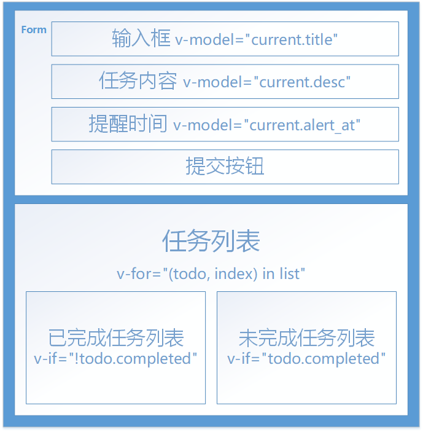

Vue.js实战: 清单应用
今天我们来做一个Vue.js的清单应用, 作为学习Vue.js的一个小练习, 这里是成品地址.
一. 确定页面的基础结构及数据存储
做一个应用首先要确定页面的基础结构和样式, 确定好各部件的上下级关系, 比如标题, 输入框, 以及待办事项, 已完成事项的位置. 这里先用html建立一个大致的框架.
二. 任务的添加, 删除与更新
清单应用的主要功能, 就是任务的添加, 删除与更新(传说中的增删改没有查).
这是一个基于Vue.js的应用, 当然要新建一个vue组件. 组件中包含了data:{}用来存放数据, 和methods:{}用来设置方法.
这里的数据分为两种类型: 输入框中正在输入的数据以及任务列表中的数据. 正在输入的数据存储在data中的对象current:{}里, 任务列表存放在数组list:[]里.
方法存放在methods:{}中, 主要的功能有添加add(), 删除remove()和更新update().
通常来说, 我们会在用户在输入框中输入回车Enter或者点击提交按钮的时候调用添加add(), 因此可以在form中绑定事件@submit.prevent="add", 在表单提交的时候add()就可以将表单内容添加到数组list[]中.
methods: {
add: function () {
var title = this.current.title;
if(!title && title !== 0) return; //验证输入框内容是否为空
var todo = Object.assign({}, this.current); //将数组合并
this.list.push(todo)
}
}
对条目进行修改, 更新时我们可以调用update()方法, 然而实际上更新和添加的实现过程大部分是一样的, 因此可以将两个方法结合成一个merge().
为了确认在submit的时候是进行添加还是进行更新, 我们可以给merge()传入一个独特的任务id, 当传入任务id的时候为更新, 无参数的时候为添加. 当确认进行更新时, 我们首先要找到即将更新的那项任务
var is_update = this.current.id;
if (is_update) { //如果是添加
//.find()返回满足条件的第一个元素,这里是"item.id==is_update"
var index = this.find_index_by_id(id);
//vue中修改数组的方式
Vue.set(this.list, index, Object.assign({}, this.current));
}else{ //否则
...
},
find_index_by_id: function (id) {
return this.list.findIndex(function (item) { //返回符合要求的项的index
return item.id == id;
})
},
如果想删除数据, 可以在用户点击按钮的时候调用remove(todo.id), 可以通过对数组进行.splice()来删除.
remove: function (id) {
var index = this.find_index_by_id(id);
//splice() 方法向/从数组中添加/删除项目，然后返回被删除的项目
//该方法会改变原始数组
this.list.splice(index, 1);
},
三. localStorage与对接
在设定好基础功能之后, 下一个问题就是是数据的存储与交互. 正常来说存储数据是需要数据库的支持的, 由于这是纯前端项目不会涉及到数据库, 我们可以使用前端的一种存储数据的方式localStorage来存放数据.
localStorage主要是两个方法: setItem()和getItem(), 分别用来创建和取值. 它和sessionStorage的区别在于sessionStorage在关闭页面之后数据就会清空, 而localStorage的数据不会在关闭页面之后清空.
localStorage.setItem('myCat', 'Tom'); //添加数据
localStorage.getItem("myCat"); //读取数据
localStorage.removeItem("myCat"); //删除数据
我们可以将localStorage封装到我们自己的js文件中, 使其在项目中更方便的使用.
function () {
window.ms = { //将方法暴露出去
set: set,
get: get,
};
function set(key, val) { //set()
localStorage.setItem(key, JSON.stringify(val));
};
function get(key) { //get()
var json = localStorage.getItem(key);
if (json) {
return JSON.parse(json);
}
}
}
这样在其他文件里调用方法的时候可以直接使用var task = ms.get('task');来获取数据了.
接着是与localStorage的对接. 在挂载时(mounted:)我们要使用get()方法取出localStorage中的数据, 并且在list[]有变动时, 我们都要使用set()方法将它保存到localStorage里, 我们可以通过Vue的侦听器(watch:)来监测list[]是否有变化.
mounted: function () {
this.list = ms.get('list') || this.list;
},
watch: {
//每次list发生变化的时候自动执行handler
list: {
deep: true, //无论list嵌套得有多深
handler: function (new_val, old_val) {
if (new_val) {
ms.set('list', new_val);
} else {
ms.set('list', []);
}
}
}
}
四. 组件化与EventBus
我们可以考虑将任务列表组件化, 在本例中我们将未完成任务列表转化为一个Vue组件:
Vue.component('task', {
template: '#task-tpl',
props: ['todo'],
methods: {
action: function (name, params) {
//https://cn.vuejs.org/v2/api/#vm-on 事件触发
//this.$emit("自定义事件名",要传送的数据)
//v-on:自定义事件名="在methods中的函数名"
Event.$emit(name, params);
}
}
})
这里我们使用了Event作为一个事件的调度中心:var Event = new Vue();, 用来进行子组件与父组件之间的通信. 这时我们要在子组件里触发一个事件Event.$emit(name, params);, 从而可以在父级组件中监控事件.
mounted: function () {
var me = this;
Event.$on('remove', function (id) {
if(id){
me.remove(id);
}
})
}
同时在组件中的按钮绑定的点击事件也要改为@click="action('remove', todo.id)"